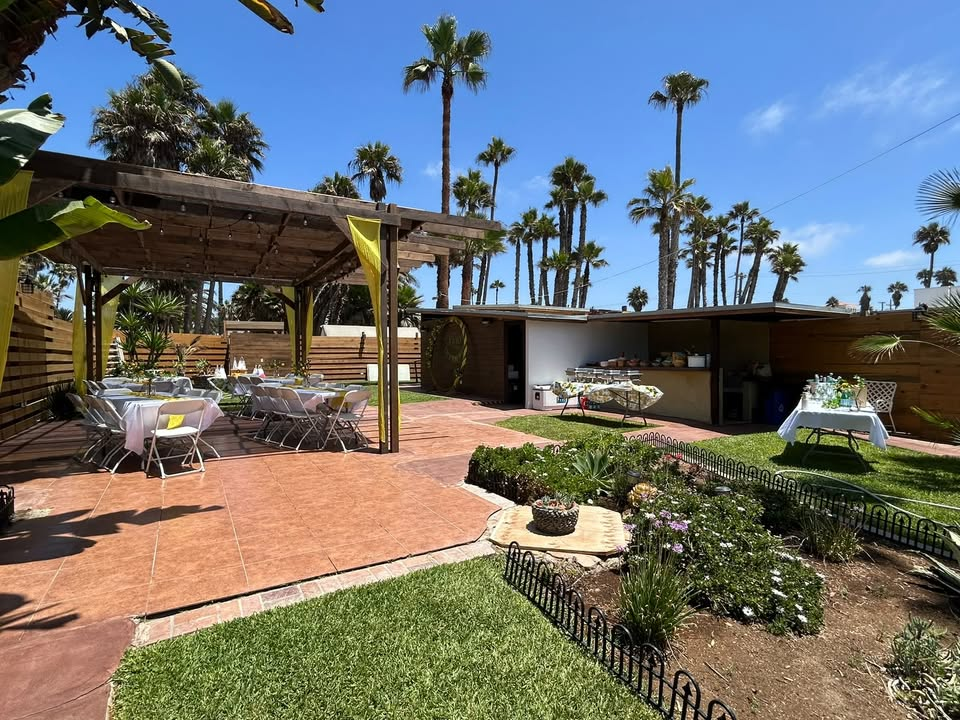
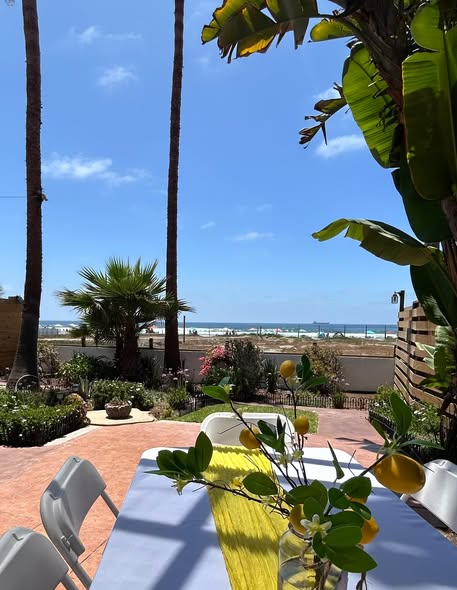

Tus mejores momentos,frente al mar. 
ROSARITO, BAJA CALIFORNIA Aquí, lo especialnatural. Disfruta tus momentos más importantes en un espacio único frente al mar, donde la belleza del paisaje se combina con un ambiente cálido, familiar y relajado.
Un jardín privado para pequeños eventos en Rosarito. Un lugar para reunirse, celebrar y dejar que la conversación dure un poquito más.
Conoce cada rincón 
El mar, siempre cerca. Un lugar que invitaquedarse. Recorre el jardín, sus detalles y los momentos compartidos. Abre una fotografía para verla de cerca.
Imágenes publicadas por Rosarito Beach Garden. Los montajes y la decoración pueden variar según el evento.
El espacio paratu celebración. Dos formas de disfrutar el jardín. Consulta la disponibilidad de tu fecha y recibe una cotización directamente con el equipo.
Paquete 1 El jardín a tu manera El espacio y los servicios esenciales para dar forma a tu evento.
Hasta 60 personas 7 horas de servicio
Hielera, bocina y wifi 2 mesas rectangulares Cocineta con zinc, estufa y asador Sanitarios con papel, jabón y toallas; regadera Estacionamiento privado Acceso controlado y videovigilancia Ver publicación original
Paquete 2 Los detalles, incluidos Los servicios del jardín, con mobiliario y detalles para vestir tu mesa.
Hasta 60 personas 7 horas de servicio
Hielera, bocina, wifi, cocineta, sanitarios y regadera Mesas y sillas para 60 personas Mantel, cubremantel, camino de mesa y servilleta de tela Bajo plato y copas Centro de mesa de flor natural Estacionamiento privado, acceso controlado y videovigilancia Ver publicación original